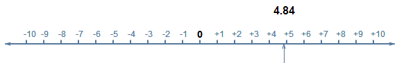

These are used to count the number of objects. They are positive whole numbers and have no fractional parts. For example 12 cars, 45 students, 3 houses. For more on this see Counting numbers and Natural numbers.
These are numbers used to measure some quantity to any desired degree of accuracy. For example a building height is 12.388 meters, or speed of an aircraft is 810.31 kilometers per hour. They can have decimal places or fractional parts. See also Scalar definition. Within this category there are several types of number:
Real numbers are those that can be positive, negative or zero, and can have decimal places or fractional parts. They are the most common numbers used in measuring quantities. Example 31.88 centimeters. They usually have units. For more see Real number definition.
Integers whole numbers that can be positive, negative or zero, but have no decimal places or fractional parts. They are like the counting numbers but can be negative. For more see Integer Definition.
Positive numbers are those which are considered to be greater than zero. A large positive number is larger than a smaller one, for example +12 is larger than +2. For more see Positive number definition.
Negative numbers are those considered to be less than zero. They can be thought of as a debt or deficit. For example, if your wallet is empty and you owe someone $12, then you can think of your wallet as having negative $12. In a way you have less than zero dollars. For more on this see Negative number definition.
Rational numbers are those that can be written as the ratio of two integers.
The word 'rational' comes from 'ratio'.
For example the number 0.5 is rational because it can be written as the ratio ½.
For more see Rational number definition.
Irrational numbers are those that are not rational, that is those that cannot be written as the ratio of two integers. For more see Irrational number definition.
Imaginary numbers are those needed to find the square root of negative numbers, which would not normally be possible. So for example the square root of -16 would be written 4i, where i is the symbol for the square root of negative one. For more on this see Imaginary number definition.
Recall that real numbers are those that lie on a number line. Complex numbers extend this idea to numbers that lie on a two dimensional flat plane. Complex numbers have two components called the real and imaginary parts. See Complex number definition.
A prime number is an integer that has no factors (Integers that divides a given number without a remainder) other than one and itself. In other words it can be divided only by one and the number itself. 17 is a prime number. 16 is not because it can be divided by 2, 4 and 8.
A composite number is one that is not prime. It does have factors, and so is the opposite of a prime number. See Composite number definition.
There are various ways that numbers can be written or diagrammed.
A number line is a graphical way to visualize numbers by placing them on a straight line, usually with zero in the middle,
positive numbers to the right and negative numbers to the left.
For more see Number line.

The most common way to represent real numbers. A string of digits and a decimal point (dot). Digits to the left of the point are increasing powers of ten, those to right are increasing negative powers of ten. Example 836.33 , -45.009.
A fraction is two quantities written one above the other, that shows how much of a a whole thing we have. For example we may have three quarters of a pizza:
For more see Fraction definition.
For very large and very small numbers, decimal notation is not the most convenient. a number in normal form consists of two parts: a coefficient and an exponent (power of ten). For example, the distance to the sun is 93000000 miles. This can be more conveniently written as 93×106 miles. 93 is the coefficient and 6 is the exponent. For more see Normal form (scientific notation).
Sometimes numbers are used as identifiers. Instead of measuring how big something is or counting things, they are used to label objects in the real world. For example, a student ID number is not used to measure anything. It is simply a string of digits that identifies one particular student.
It makes no sense to try and do arithmetic with them. Dividing a student number by two or finding the square root of a phone number has no meaning.